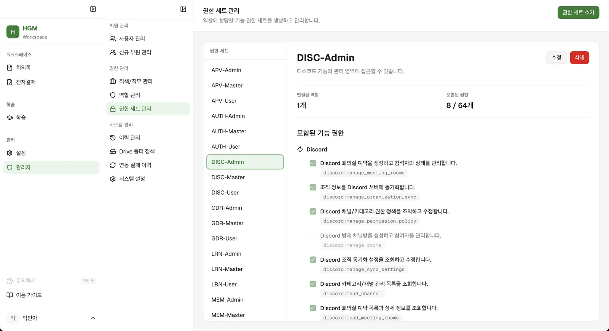
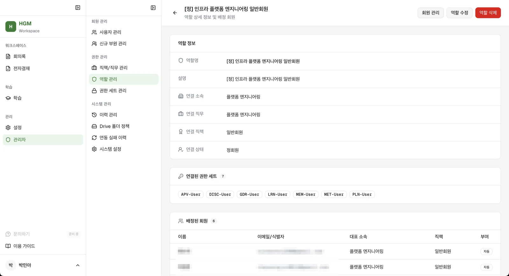
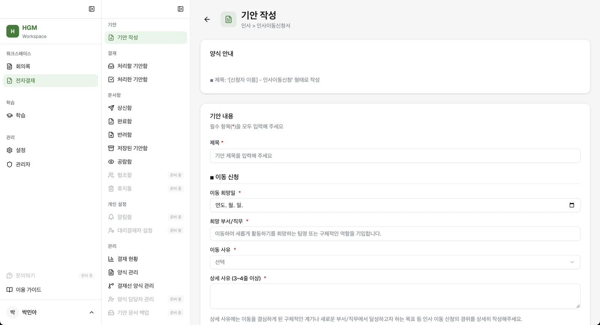
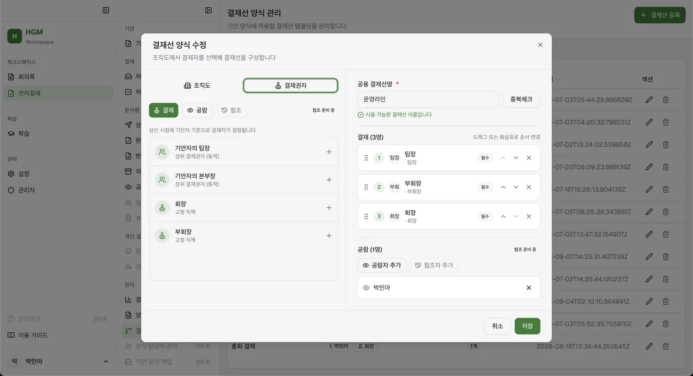
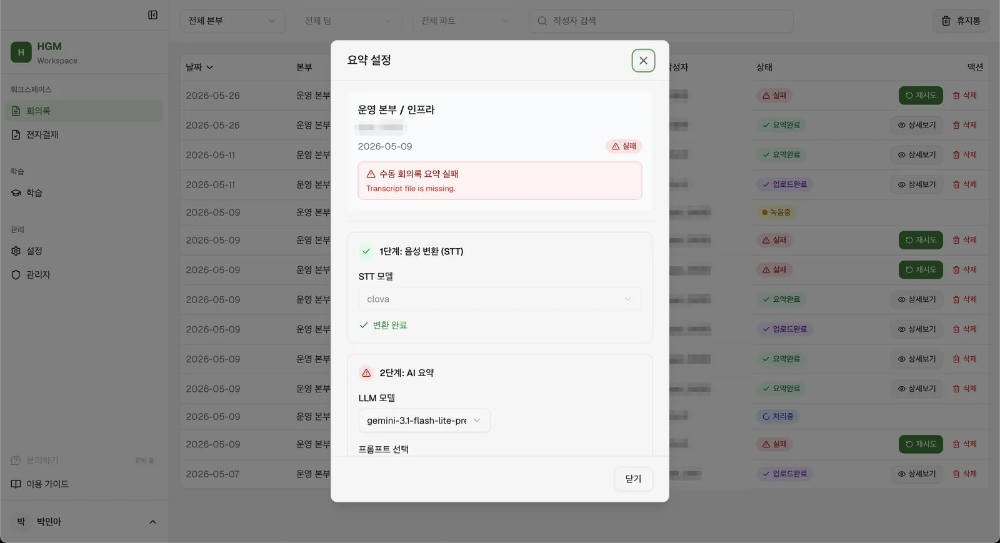

hgm_workspace
게임 개발 연합동아리(약 70명)의 회의록·전자결재·회원 관리·학습 등 내부 업무 플랫폼. 조직도와 권한을 한 곳에서 정하면 Discord·Google Drive·Plane으로 전파되는 구조
- 기간
- 2026.01 ~ 진행 중 (운영 중)
- 팀
- 2인 → 11인 (기획·개발·AI 엔지니어·QA)
- 역할
- 총괄 PO · FE/BE 개발 · 테크리드
- 스택
- Next.js · React · FastAPI · PostgreSQL
소스코드는 비공개 · 화면 속 회원 정보는 가림 처리
배경
- 노션·아사나·구글 드라이브·디스코드 병행, 결재·공지는 카카오워크
- 새 부원이 들어올 때마다 도구별 접근 권한을 따로 부여, 인프라팀의 관리 지점 과다
- 카카오워크 가격 정책 변경으로 계속 사용 곤란
- 목표는 흩어진 접근과 관리를 한곳으로 모으는 것. 기존 도구는 유지하고 권한의 원천을 하나로
구조
조직도 · 권한 변경 → 외부 도구로 전파
hgm_workspace · 조직도와 권한의 원천
전자결재카카오워크 대체
회의록녹음 → STT → 요약 → Asana
회원·권한4축 배정
학습LMS
- Discord로그인 · 역할 동기화
- Google Drive공유 권한 전파
- Plane프로젝트 멤버십 · 문의 연결
Next.js 정적 export→FastAPI→PostgreSQL
내가 한 일
회원·권한 모델
설계·구현 주도 · 외부 도구 동기화 구현은 팀원
- 운영팀의 실제 관리 방식 조사 (명단, 조직도 배정, 직책·직무, 경고·출석), 설문으로 추가 기능 수집
- 배정 축 4개: 소속 · 직무 · 직책 · 회원 상태
- 직책과 권한이 딱 맞지 않는다는 전제. 기능을 CRUD 기준으로 정의하고 API 권한과 화면 버튼·사이드바를 묶어 권한 item으로 설계
- 권한 itemCRUD · API · 버튼·사이드바
- 권한 세트
- 역할
- 4축 배정소속 · 직무 · 직책 · 회원 상태
| 회의록 권한 세트 | 할 수 있는 일 | 배정 대상 |
|---|
| MET-User | 요약·변환 | 수습회원 이상 전체 |
| MET-Master | + 시스템 인스트럭션·키워드 설정 | 수습회원 이상 + 파트장 이상 |
| MET-Admin | + API 관리 | 인프라팀 보안 담당자 |

권한 세트 관리 · 기능 권한을 세트 단위로 묶어 역할에 할당
역할 상세 · 4축 연결 조건과 권한 세트, 조건에 맞는 회원 자동 배정결과26-2 조직개편(팀·파트 신설, 드라이브 폴더 체계 변경)을 코드 수정 없이 반영. 신규 인원 도구 권한 부여 3단계 이상 → 조직도 배정 1단계
전자결재 양식 빌더
요구사항 정의·프론트 주도 · 백엔드 공동
- 결재 본문을 자유 텍스트로 받자 "총액은 어떻게 받나", "선택지 항목은 어떻게 표준화하나" 문의 발생
- 운영팀의 결재 내역 시트 관리 니즈 → 결재 본문을 구조화된 데이터로 만드는 것이 요구사항
- JSON Schema 동적 폼(RJSF) 리서치·도입 결정. 범용성 · 라이선스 · 용처 커버 기준
- 결재선은 고정 담당자 지정과 상위 결재선 동적 지정(팀장 → 본부장 → 부회장 → 회장)을 분리 설계

기안 작성 · 관리자가 빌더로 등록한 양식이 입력 폼으로 표시
결재선 양식 · 기안자 기준 동적 결재권자와 고정 직책을 나눠 구성결과결재 양식 약 20종 전부 관리자가 빌더로 등록, 양식 추가에 개발 배포 0회. 임원진·운영팀 사용 중
학습(LMS) 모듈
단독 구현
- 약 한 달, DB 스키마부터 화면까지: 테이블 13 · 엔드포인트 55 · 화면 라우트 17
- 학습 경로, 과정·지식 저작, 발행 승인, 진도·수료, 배지·XP·레벨, 통계
회의록 실패 상태 정의
프론트 담당 · 요약 파이프라인은 팀원 구현
- 드라이브 업로드 실패와 요약 실패가 모두 500으로 내려와 화면에는 "실패"만 표시, 재시도 불가
- 상태 코드 체계 제안, 백엔드 담당자와 확정. 1단계 STT 변환과 2단계 AI 요약 분리
- 실패한 단계부터 다시 실행 (재변환 / 재시도 버튼 분리), 이전 설정값 유지
- STOPPED녹음 종료
- TRANSCRIBED1단계 STT 변환
- SUMMARIZED2단계 AI 요약
처리 중 PROCESSING · 실패 시 FAILED → 1단계는 재변환, 2단계는 재시도

요약 설정 · 1단계 변환은 완료, 실패한 2단계 요약만 다시 실행
결과일시적 서버 오류 외에는 담당자 문의 없이 사용자가 직접 재시도
팀 운영 · 개발 규칙
총괄 PO · 테크리드
- 2026.03 인프라팀 신설 이후 팀 2인 → 11인 확장
- 온보딩: 문서(컨벤션·코드 구조·README) → 간단 과제 → 담당 영역 이슈 assign → 코드리뷰
- 주 1회 1시간 회의, 회의 2시간 전 주간보고 시트(실적·계획·이슈) 작성 후 아젠다 구성
- FE/BE 테크리드 분리, GitHub Issue 관리 규정
- 타인 PR 리뷰 68건, OWASP Top 10 기준 보안 검토 포함
AI 활용 경계
작업 방식
- DB 설계 · 큰 화면 구조 · 폴더 구조 · 디자인 패턴은 사람, 그 안을 채우는 코드는 AI
- 계획 단계 설계를 AI에 맡기고 사람이 검토, 규칙 파일·금지 훅으로 경계 설정, 설계 문서를 코드와 함께 형상관리
- 사례: 조직도 '대표 지정'과 전자결재 연동에서 AI가 소속의 is_owner 대신 회원의 is_manager 참조 → 결재선 오류 → 롤백. DB 전체에 설계 의도를 적은 description을 추가해 AI가 읽는 맥락 보강
기술 결정
- 정적 export(SPA) 배포: 개인 서버 운영 · AWS 이관 계획 · 적은 리소스 → 서버 부하와 배포 관리 지점 축소. 내부 서비스라 SEO 불필요
- 프론트 레포를 백엔드 레포에 subtree로 흡수: FE·BE를 함께 고치는 이슈가 많아 PR 분리가 불필요
- React 선택: 기능 확장 가능성이 큰 제품이라 상태관리를 세밀하게 다룰 수 있는 쪽
결과
약 70명사용 대상 동아리 규모
2인 → 11인개발·운영 팀 확장
20종 · 배포 0회관리자가 직접 등록한 결재 양식
3단계+ → 1단계신규 인원 도구 권한 부여
한계와 배운 점
- 사용량 데이터 없이 출시해 "얼마나 도움이 됐는가"에 수치로 답하지 못함 → Microsoft Clarity 도입 예정
- 2026.08 결재선 회귀: release의 수정분을 master로 체리픽 후 상신 실패, 4시간 19분 만에 롤백. 원인은 체리픽 재검증 절차 부재
- 만드는 것과 계속 굴러가게 하는 것은 다른 일. 조직이 커지면 코드보다 역할과 기준이 먼저 병목